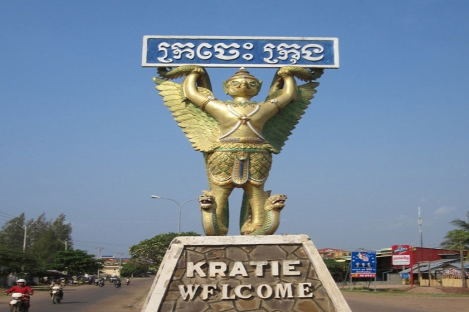

ខេត្តក្រចេះ

ក្រចេះគឺជាខេត្តមួយក្នុងប្រទេសកម្ពុជា។ ក្រុងរបស់ខេត្តមានឈ្មោះថា ក្រចេះដែលជាទីរួមខេត្ត។ ក្រចេះគឺជាខេត្តតូចមួយតែគួរឲ្យចាប់ចិត្ត សិ្ថតនៅប៉ែកឦសាននៃ រាជធានី ភំ្នពេញ។ វាមានព្រំប្រទល់ជាប់នឹងស្ទឹងត្រែងនៅភាគខាងជើង មណ្ឌលគីរីនៅខាងកើត កំពង់ធំ និង កំពង់ចាមនៅខាងលិច
ហើយត្បូងឃ្មុំ និងវៀតណាមនៅខាងត្បូង។ មានផ្លូវគមនាគមន៍តភ្ជាប់ ៣ខែ្ស គឺផ្លូវជាតិលេខ៧ ចម្ងាយ ៣៤0 គីឡូម៉ែត្រ ផ្លូវលំក្រាលក្រួសក្រហម កាត់ស្រុកតំបែរ-ស្រុកឆ្លូង មួយខែ្ស និងតាមមាត់ទនេ្លមួយខែ្សទៀត មានចម្ងាយប្រហាក់ប្រហែល នឹងផ្លូវទឹកទនេ្លមេគង្គ ២២០ គីឡូម៉ែត្រ។
ការធ្វើដំណើរ ទោះបីតាមរថយន្តកី្ត តាមកាណូតលឿនកី្ត មិនលើសពី ៥ម៉ោងទេ ពិតជាបានមកដល់ក្រុងក្រចេះដោយសុវតិ្ថភាព។
ខេត្តក្រចេះ សម្បូរដោយធនធានធម្មជាតិ នៅលើដី មានព្រៃព្រឹក្សា វាលស្រែ ដីមានជីជាតិ នៅក្នុងទឹកសម្បូរដោយត្រី ពិសេសមេពូជត្រីធំៗ នៅតាមអន្លង់មេគង្គ
ក្នុងស្រុកសំបូរ និងមានសត្វផ្សោតទឹកសាប ដែលទាក់ទាញភ្ញៀវ ទេសចរជាតិ និងអន្តរជាតិ។ ក្រៅពីនេះ នៅមានទេសភាព ដ៏ស្រស់សោភ័ណ ថៃ្ងលិចគងព្រៃកោះទ្រង់ដ៏ស្អាត គួរឱ្យចង់ទស្សនាទៀតផង។ ទាំងអស់ដែលបានបរិយាយចោះៗ ខាងលើ ធ្វើឲ្យខេត្តក្រចេះមានកំណើនភ្ញៀវទេសចរណ៍ទេ្វដងក្នុង មួយឆ្នាំៗ។
កត្តាទាំងនេះបាន ចង្អុលឲ្យខេត្តក្រចេះជ្រើសរើសយក វិស័យទេសចរណ៍ ជាវិស័យអាទិភាពក្នុងកិច្ចការស្តារ និងអភិវឌ្ឍសេដ្ឋកិច្ច ទោះតាមរយៈចំណូលដោយផ្ទាល់កី្ត ដោយប្រយោលកី្ត ក៏វិស័យទេសចរណ៍បានកំពុងជំរុញយ៉ាងស្វាហាប់ ដើម្បីធ្វើជាឧបករណ៍វិជ្ជមានមួយក្នុងការកាត់បន្ថយភាពក្រីក្រ
បង្កើនការងារសម្រាប់ប្រជាពលរដ្ឋ ជាង ២៨ ម៉ឺននាក់ នៅខេត្តក្រចេះ។

រមណីយដ្ឋានអន្លង់ផ្សោត
ក្រចេះជាខេត្តមួយដែលមានកន្លែងទេសចរណ៍កួរឲ្យទាក់ទាញភ្ញៀវទេសចរណ៍មានដូចជា រម្នីយដ្ឋានព្រែកកាំពី ដែលមានសត្វផ្សោតទឹកសាបដ៍កម្រនៅលើពីភពលោក ទោះបីជាកំណាត់ផ្លូវក្រាលកៅស៊ូមួយខ្សែ ឆ្ពោះទៅរមណីយដ្ឋានអន្លង់ផ្សោត រមណីយដ្ឋានកាំពី និងវត្តសសរមួួយរយ
មានលក្ខណៈតូចចង្អៀតក្តី ក៏ប្រជាពលរដ្ឋ ភ្ញៀវទេសចរជាតិ និងអន្តរជាតិ នៅតែព្យាយាមធ្វើដំណើរទៅទស្សនាកំសាន្ត តាមមធ្យោបាយ រៀងៗខ្លួនដែរ ព្រោះថាជាផ្លូវសំខាន់ហើយតែងមានសភាពកុះករក្នុងពេលមានបុណ្យទានម្តងៗ។
នាឱកាសបុណ្យចូលឆ្នាំ
គេឃើញភ្ញៀវទេសចរជាតិនិងអន្តរជាតិធ្វើដំណើរលើកំណាត់ផ្លូវក្រាលកៅស៊ូនេះឆ្ពោះទៅកាន់រមណីយដ្ឋានអន្លង់ផ្សោត រមណីយដ្ឋានកាំពី និងវត្តសសរ១០០ វត្តភ្នំសំបុក ភ្នំសុពណ៌កាឡី សួនស្នេហ៍ថ្មបាំង ព្រមទាំងទិញ ក្រូចកោះទ្រង់ ក្រឡានថ្មគ្រែ
និង វត្ថុអនុស្សារីយន៍ ជាច្រើនទៀត ថ្វីដ្បិតសភាពផ្លូវមានលក្ខណៈតូចចង្អៀតនិងជិះប្រជ្រៀតគ្នាយ៉ាងណាក៏ដោយ ក៏នៅតែមានមនុស្សជាច្រើនធ្វើដំណើរទៅលេងកំសាន្តយ៉ាងច្រើនគ្មានពេលល ទីផ្សារ។
រម្នីយដ្ឋានព្រែកកាំពី
ក្រចេះជាខេត្តមួយដែលមានកន្លែងទេសចរណ៍កួរឲ្យទាក់ទាញភ្ញៀវទេសចរណ៍មានដូចជា រម្នីយដ្ឋានព្រែកកាំពី ដែលមានសត្វផ្សោតទឹកសាបដ៍កម្រនៅលើពីភពលោក ទោះបីជាកំណាត់ផ្លូវក្រាលកៅស៊ូមួយខ្សែ ឆ្ពោះទៅរមណីយដ្ឋានអន្លង់ផ្សោត រមណីយដ្ឋានកាំពី និងវត្តសសរមួួយរយ
មានលក្ខណៈតូចចង្អៀតក្តី ក៏ប្រជាពលរដ្ឋ ភ្ញៀវទេសចរជាតិ និងអន្តរជាតិ នៅតែព្យាយាមធ្វើដំណើរទៅទស្សនាកំសាន្ត តាមមធ្យោបាយ រៀងៗខ្លួនដែរ ព្រោះថាជាផ្លូវសំខាន់ហើយតែងមានសភាពកុះករក្នុងពេលមានបុណ្យទានម្តងៗ។ នាឱកាសបុណ្យចូលឆ្នាំ
គេឃើញភ្ញៀវទេសចរជាតិនិងអន្តរជាតិធ្វើដំណើរ លើកំណាត់ផ្លូវក្រាលកៅស៊ូនេះឆ្ពោះទៅកាន់រមណីយដ្ឋានអន្លង់ផ្សោត រមណីយដ្ឋានកាំពី និងវត្តសសរ១០០ វត្តភ្នំសំបុក ភ្នំសុពណ៌កាឡី សួនស្នេហ៍ថ្មបាំង ព្រមទាំងទិញ ក្រូចកោះទ្រង់ ក្រឡានថ្មគ្រែ
និង វត្ថុអនុស្សារីយន៍ ជាច្រើនទៀត ថ្វីដ្បិតសភាពផ្លូវមានលក្ខណៈតូចចង្អៀតនិងជិះប្រជ្រៀតគ្នាយ៉ាងណាក៏ដោយ ក៏នៅតែមានមនុស្សជាច្រើនធ្វើដំណើរទៅលេងកំសាន្តយ៉ាងច្រើន។
វត្ថុអនុស្សារីយន៍
អ្នករស់នៅអចិន្ត្រៃយ៍នៅខេត្តក្រចេះភាគច្រើនគឺជាកសិករ រឺ អ្នកនេសាទចិញ្ចឹមពោះ។ ៧៨ % នៃពួកគាត់ជាអ្នកមានការងារក្នុងវិស័យកសិកម្ម។ សាមសិបភាគរយនៃគ្រួសារដែលនៅខេត្តក្រចេះរកបានតិចជាង ១ $ ស.រ ក្នុងមួយថ្ងៃ អត្រាភាពក្រីក្ររបស់ខេត្តគឺ ៣២ % យ៉ាងណាក៏វានៅតែទាបជាងមធ្យមភាគជាតិដែលមានកំរិត
៣៩ %។ ការជីករករ៉ែមាសមួយភាគមាននៅក្នុងខេត្តក្រចេះ។ ដីភាគច្រើននៅខេត្តក្រចេះមិនសូវមានជីជាតិទេ ខេត្តនេះកាលពីដំបូងដាំដំណាំឧស្សាហកម្មដែលរស់បានយូរឆ្នាំដូចជាកៅស៊ូ។ ការកាប់ព្រៃឈើខុសច្បាប់បានត្រួតពិនិត្យដោយអ្នករដ្ឋការខេត្តគឺជាបញ្ហាមួយ។ ក្រចេះមានសក្ដានុពលជាគោលដៅបរិស្ថានទេសចរណ៍
(អេកូទេសចរណ៍)។ ប្រព័ន្ធផ្លូវគមនាគមន៍ក្រចេះមានការអភិវឌ្ឍតិចតួច។ កាលពីឆ្នាំ ១៩៩៨ គ្រួសារជាមធ្យមមានផ្ទៃដីកសិកម្ម ០,៤៨ ហិកតា និង ៣៧ % ទៀតគ្មានដីប្រើប្រាស់ឡើយ។
ថ្ងៃលិចនៅខេត្តក្រចេះ
ខេត្តនេះបានគ្របដណ្ដប់ភាគច្រើនបំផុតដោយព្រៃយ៉ាងក្រាស់។មានអាកាសធាតុខ្យល់រដូវ ដែលមានរដូវរងារចាប់ពីខែ វិច្ឆិកា ទៅដល់ មីនា រដូវក្ដៅចាប់ពីខែ មីនា ទៅដល់ ខែឧសភា និងរដូវវស្សាចាប់ពីខែ ឧសភា ដល់ តុលា។[១៧] មានទឹកជំនន់ជានិច្ចជាកាលនៅខេត្តក្រចេះ ទន្លេមេគង្គអាចមានទឹកហូរកាត់លើសលប់ខ្លាំងស្មើនឹង
៤ ម កំឡុងរដូវវស្សា។ក្រចេះត្រូវបានគេស្គាល់ដោយទស្សនីយភាពមាត់ទន្លេគួរឱ្យទាក់ទាញ និង ភូមិស្រុក ហើយនិងវាលស្រែដ៏ខៀវស្រងាត់។ ព្រៃឈើនៅក្រចេះប្រែទៅជាស្រឡះ និងមានកម្រាស់តិចជាងទីកន្លែងផ្សេងទៀតនៅក្នុងប្រទេសកម្ពុជា ដែលព្រៃទាំងនោះបានក្លាយជាដើមឈើរុះរោយ ជ្រុះស្លឹកកំឡុងរដូវប្រាំង។